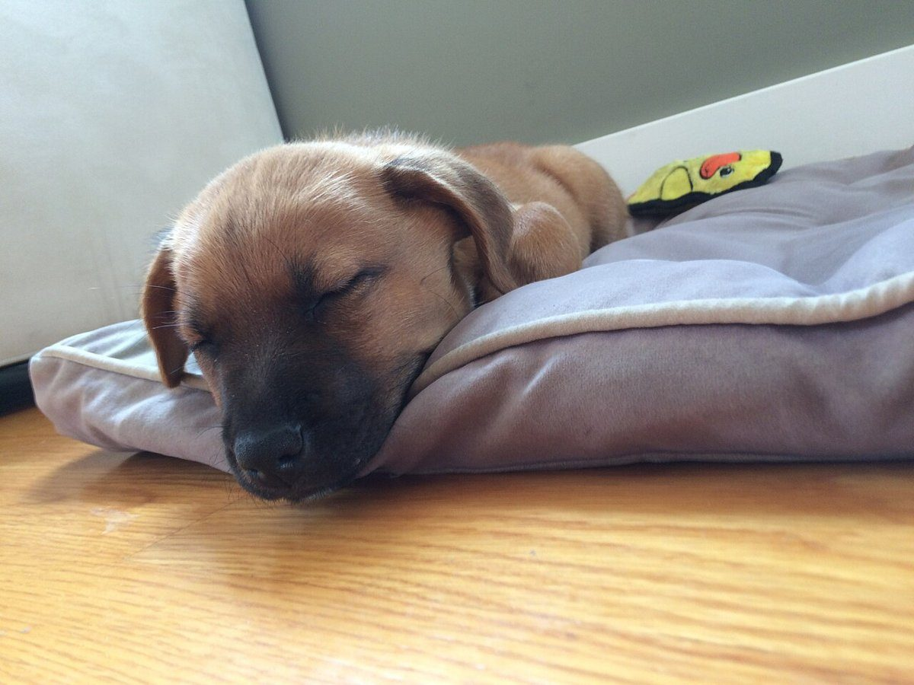
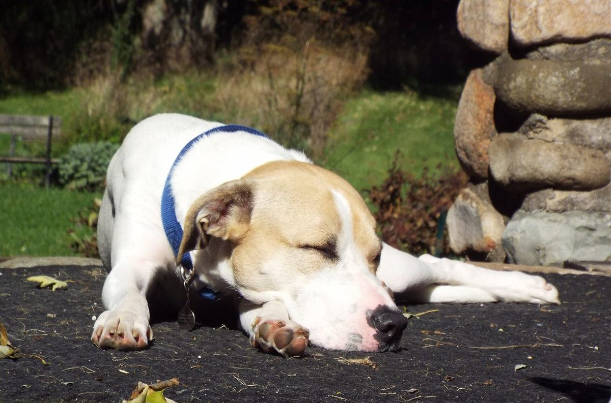

店のこと
店のこと
お店について確認できているのは、所在地・電話番号・Instagramのアカウントです。
このページの「想像してみる」部分は、制作側が想像して書いたものです。お店の実際の様子・考え・商品とは関係がありません。
確認できていること
- 店名は「パンカリネ」、業種はベーカリー
- 所在地は山梨県富士吉田市緑ケ丘１丁目２−４(〒403-0013)
- 電話番号は0555-72-9390
- Instagramは@pan.karine25
- 営業時間・定休日・パンの種類・価格・ご予約・駐車場は準備中

想像してみる
「かりね」という音から
由来は分かりません。制作側は「仮寝(かりね)」という言葉から、ひと休みのやわらかな時間を連想しました。ただし、それがお店の名前や考え方と関係しているかどうかは分かりません。実際のお店の姿ではなく、このサイトだけの遊びです。

